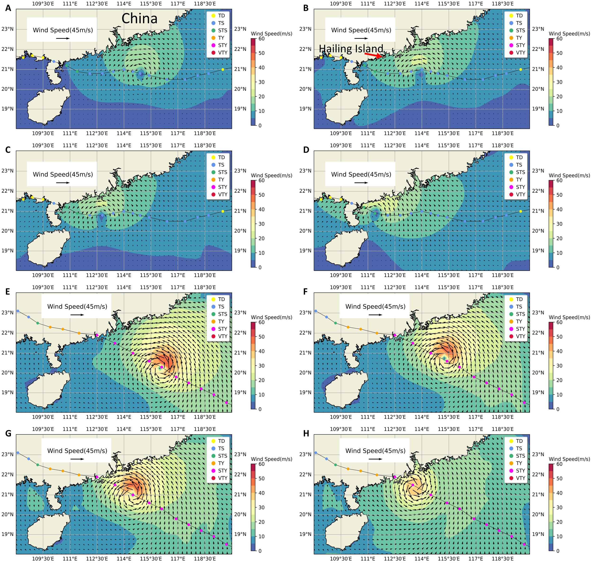
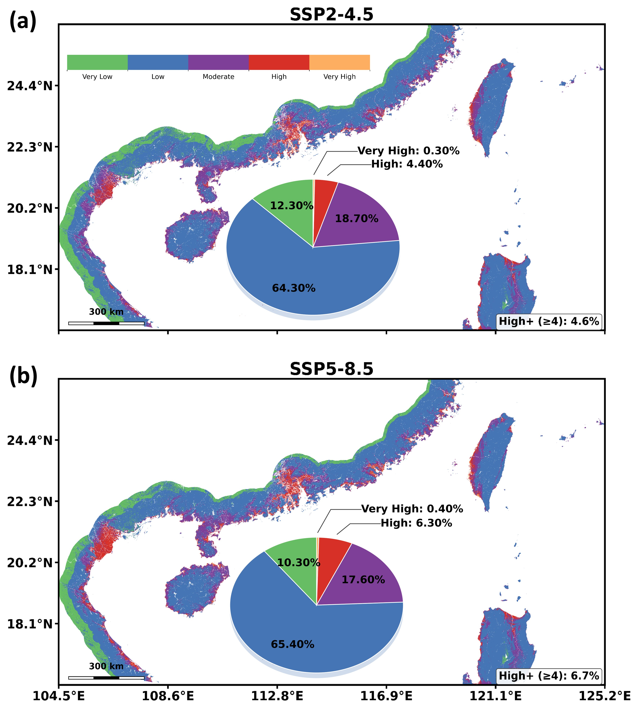

 Tide-surge interactions in Northern South China Sea: a comparative study of Barijat and Mangkhut (2018) Frontiers in Marine Science (2024) · Published
 Diverse response of extreme sea levels amplification and vulnerable deltas/islands by the end of the 21st century Advances in Climate Change Research · Under Review